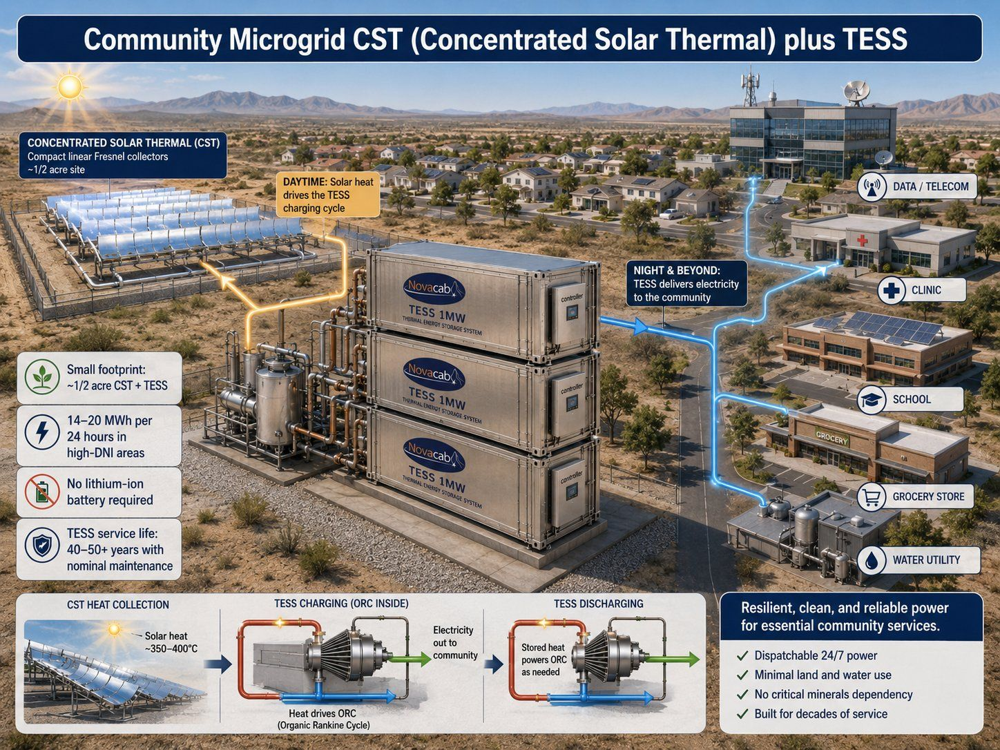
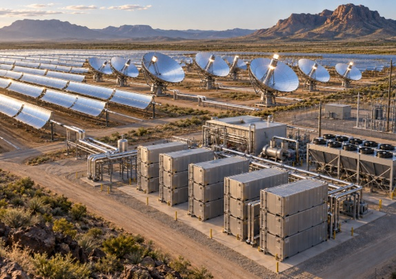

A compact concentrated solar thermal (CST) field directs solar heat straight into Novacab TESS. TESS stores it and discharges through an ORC turbine on demand — dispatchable, behind-the-meter power for a community microgrid, with no lithium-ion battery in the loop.
Compact linear Fresnel CST collectors heat a transfer fluid to roughly 350–400°C. That heat charges Novacab TESS through an internal Organic Rankine Cycle (ORC) loop by day; at night, or whenever the community needs it, TESS discharges through the same ORC to deliver electricity. The whole system — CST field plus TESS — fits on roughly half an acre and is designed to serve essential community loads: data/telecom, clinics, schools, grocery and water utilities.
| Planning basis | Reference value | What it implies |
|---|---|---|
| Footprint | ~1/2 acre for CST field + TESS in high-DNI (direct normal irradiance) areas | A small, siteable land parcel can anchor a genuine community-scale power resource. |
| Daily output | 14–20 MWh over 24 hours in high-DNI regions | Enough dispatchable energy for a cluster of essential-service buildings, not just a single site. |
| Storage chemistry | No lithium-ion battery required — thermal storage via SPCM (solid phase change material) | Avoids battery fire risk, degradation curves and end-of-life battery disposal entirely. |
| Service life | 40–50+ years with nominal maintenance | A multi-decade asset life, not a 10–15 year battery replacement cycle. |
| Phase | What happens | Result |
|---|---|---|
| CST heat collection | Linear Fresnel mirrors concentrate solar energy onto a receiver, heating transfer fluid to ~350–400°C. | Free, fuel-free thermal input during daylight hours. |
| TESS charging (daytime) | Solar heat drives the TESS charging cycle through an internal ORC module, storing thermal energy in SPCM. | Energy banked for use whenever it's needed — not just when the sun is out. |
| TESS discharging (night & beyond) | Stored heat powers the ORC as needed, delivering electricity out to the community. | Dispatchable 24/7 power without a diesel genset or a battery bank. |
Best fit: communities, campuses or utility service areas where essential loads — data/telecom, clinic, school, grocery, water — need resilient, dispatchable power and a bypassable pilot can prove daily output, dispatch reliability and land/water use before scaling to a full microgrid buildout.
Parabolic troughs and dish concentrators have been in commercial use since the 1980s. Either way, the mirrors focus sunlight into heat. TESS stores that heat and converts it to electricity through its ORC. TESS modules capture about 3.5 MMBtu per charge cycle and average about 10 MMBtu per day in a high-sun location. That works out to roughly 16.8 MWh of electricity every 24 hours from a single 1 MW TESS (about 700 kW, around the clock). AI controllers schedule when stored heat is released. That lets the system power loads 24×7 and, where the law allows, sell surplus power to the grid.

The Fort Davis TESS + Solar Thermal Community Power Initiative is a proposal. It would set up a locally owned, solar-thermal power generation and storage system in partnership with Rio Grande Electric Cooperative (RGEC) and private funders. The aims are energy independence, economic development and local incentives for Jeff Davis County, Texas. A solar trough array would drive a closed-loop thermal fluid circuit that charges TESS for 24×7 dispatchable power.
| Per 1 MW system | Planning value |
|---|---|
| Technology | Rackam solar thermal concentrators + Novacab TESS (thermal energy storage & conversion) |
| Footprint | Less than one acre |
| Output | 16.8 MWh per 24 hours · ~6,132 MWh per year |
| Thermal storage | 3.5 MMBtu per cycle · ~10 MMBtu per day |
| Installed cost | ~$3.47M including engineering, land, construction and grid interface (TESS unit ~$1.79M) |
| Incentives | 30% ITC for energy storage + 10% domestic-content bonus (≈$540K) and 80–100% accelerated depreciation (≈$400K) |
| Carbon offset | ≈2,600 tons CO₂ per year |
| System life | More than 25 years. TESS has no cycle degradation, unlike lithium storage. |
| Phase | What happens | Timing |
|---|---|---|
| 1 · Feasibility | Joint feasibility and interconnection study with RGEC | ≈90 days |
| 2 · MOU | Memorandum of understanding that defines the cooperative framework and power purchase terms | 2–3 months |
| 3 · Pilot | Install and commission 1 MW of solar thermal + TESS | Year 1 · ~12 months to first power |
| 4 · Expansion | Grow to as much as 10 MW countywide and launch an energy-credit program | Years 2–5 |
For larger, utility-scale solar-thermal fields in West Texas, two things are sized separately. The mirror field is sized for annual MWh and winter sun. TESS storage is sized for the night-time hours the site must cover. Then CST + TESS is compared with PV + batteries on equal service: the same annual MWh, dependable MW, night duration and reliability. We screen every larger configuration this way before quoting output or land.
Small footprint. No critical-minerals dependency. Minimal land and water use. A CST + TESS microgrid is engineered to keep dispatchable, 24/7 power flowing to the services a community can't do without — more on the Novacab TESS platform that makes it possible.
We would rather send you a data request than a brochure. This is what turns a conversation into a bankable project.
Site DNI (direct normal irradiance) data; preferred concentrator type (trough, dish or Fresnel); available land and orientation; essential-load list and peak/average demand for each building; existing grid interconnection or islanding requirements; water availability; backup/black-start requirements; permitting and land-use constraints.
All claims relating to site output, footprint, service life, dispatch reliability, payback, incentives and deployment economics are planning assumptions, analogues or manufacturer reference data — unless and until they are validated for your specific site through engineering, measurement, vendor quotation, financing documentation, legal review and final commercial agreements.